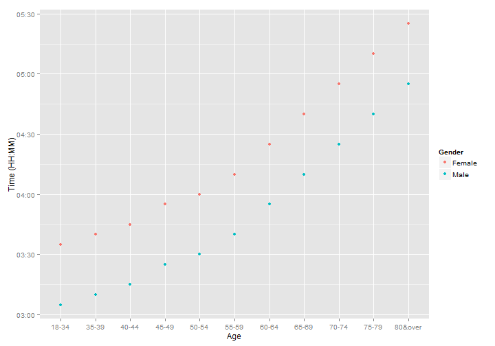

Boston Marathon Qualifying Times
What You Need to Run to Get to Boston
by Jillian Pollack
by Jillian Pollack
The Boston Marathon is the only non-Olympic marathon in the United States that a runner must qualify for. For this reason, many runners are striving to earn that Boston Qualifier, or BQ.
The Boston Marathon webpage offers a table with the marathon qualifying times for the next year. On another website, you can put this time into a pace calculator to figure out what pace per mile you need to run in order to earn the qualifying time. With my shiny app, you can find the time and pace all in one place!
The qualifying times get slower as one ages, and male times are faster than females. See the next slide for a plot showing the age groups and times needed for the race, broken down by gender. You need to run this time between September 14, 2013 and September 8, 2014. Race day for 2015 is Monday, April 20. Don't think you have enough time to get a marathon in during this year's qualifying window? Don't worry...qualifying times will most likely stay the same for next year and you can enter the 2016 race!
library(ggplot2)
times <- read.table("BostonQualifyingPaces.txt",header=TRUE,sep="")
times$Time <- as.POSIXct(strptime(times$Time, "%H:%M:%S"))
qplot(data=times,Age,Time,geom="point",colour=ifelse(Gender=="Male","blue","red"))

Please visit my app where you can select your age on race day and then gender. Your qualifying time, pace per mile, and a plot displaying your overall time at each mile will appear on the right. Enjoy, and good luck!